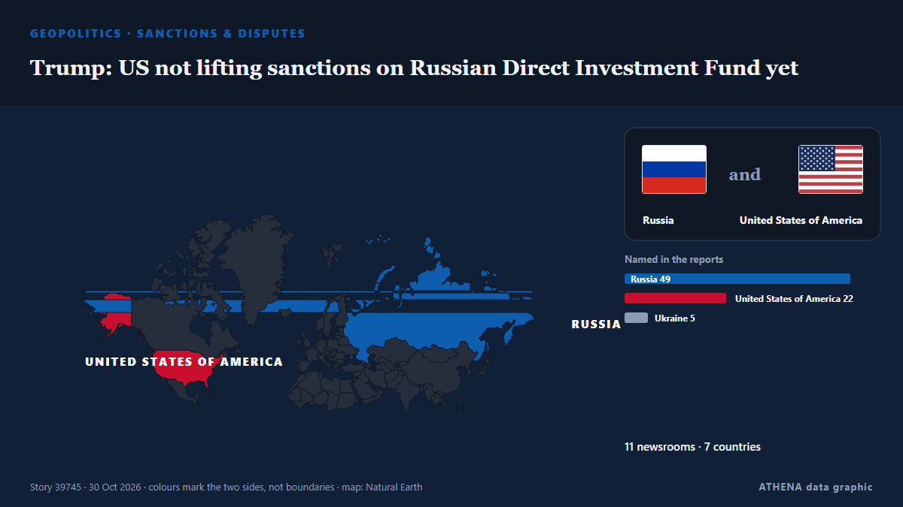

Sanciones y disputas
| 18 oct | 0 |
|---|---|
| 19 oct | 0 |
| 20 oct | 0 |
| 21 oct | 0 |
| 22 oct | 0 |
| 23 oct | 0 |
| 24 oct | 0 |
| 25 oct | 1 |
| 26 oct | 2 |
| 27 oct | 3 |
| 28 oct | 6 |
| 29 oct | 2 |
| 30 oct | 1 |
| 31 oct | 0 |
Los titulares se muestran en inglés, tal como se publicaron.

Trump: US not lifting sanctions on Russian Direct Investment Fund yet
The move would be the latest U.S. concession to Moscow as President Trump pursues economic incentives he hopes will secure an end to war in Ukraine. de The New York Times (World)
Alibaba wins injunction against Pentagon contract restrictions tied to China blacklist
The company was added to a Pentagon list of firms said to aid China’s military. de The Straits Times
Tanzania, Uganda bolster ties in investment, energy, road projects as bilateral trade hits 406.8m US dollars
KAMPALA: TANZANIA and Uganda are seeking to deepen economic ties through trade, investment, energy and infrastructure projects, with bilateral trade reaching 406.8m US dollars in the 2024/25… de Daily News
Colonial West still trying to exploit Africa’s resources: Putin
The Russia-Africa Summit aims to push for Russian political and economic influence on Africa. de SABC News
Man remanded in custody over dissident feud shooting charge
John-Jo Lynch, 24, is accused of the attempted murder of a man who was shot as he sat inside a taxi in February 2025. de Evening Standard (London)
Iran imports at least $2 billion in military supplies despite US blockade - Reuters
Iran has used a secret network of more than 5,000 military agencies to import at least $2 billion worth of equipment, explosives and heavy-duty trucks since January 2025, bypassing Western sanctions… de Iran International (English)
Jetten backpedals on plans to tax the royals
Prime minister Rob Jetten is refusing to act on calls for the royal family to pay taxes, despite his party... de DutchNews.nl
US sanctions 10 North Korean and Russian nationals for role in IT worker fraud
The U.S. has announced new sanctions against 10 North Korean and Russian nationals for their role in IT worker schemes that “defraud American businesses” and generate revenue for Pyongyang’s weapons… de NK News
S. Korea, US, partners reaffirm N. Korea denuclearization goal, back sanctions enforcement
South Korea, the United States and other like-minded partners on Wednesday reaffirmed their commitment to the denuclearization of North Korea, highlighting recent sanctions targeting Pyongyang's… de The Korea Times
Global funding for nature still falling short: Paulson Institute
Concerns have been raised about reduced funding for human trafficking prevention and victim protection in Trinidad and Tobago, with one US official warning that fewer victims were being identified… de Trinidad Express